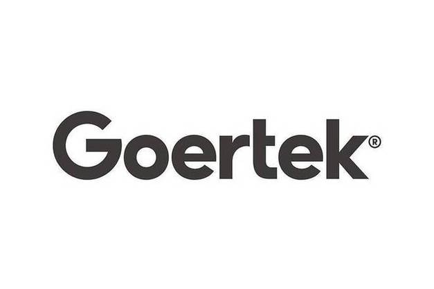

// Tech Stack
Spring AI · LangChain · MCP · Canal · Elasticsearch · Caffeine · Tauri · Rust
// Experience

AI Agent 研发实习生
参与技术成果智能管理平台升级，围绕安全RAG、智能Agent与知识图谱能力建设。
// Open Source
skill-creator: use explicit UTF-8 encoding for file IO in eval/optimize scripts
fix(scripts): report unexpected fs errors as structured validator output
fix: kill local process group on timeout
feat(source/postgres): add queryExecMode to managed sources
benchmark: add BenchmarkNativeGoroutineNoLimit
Add support for Zed in setup docs
Add support for Zed in setup docs
Personal Projects
gemini-context-navigator
Chrome 扩展，为长 Gemini 对话提供项目上下文导航与智能代码片段管理
OmniClip
下一代智能剪切板 — AI 语义召回 + 多模态即时处理，让复制不只是暂存
Prism 棱镜
极简全局 AI 意图转译桌面端 — 快捷键唤起，大白话 → 结构化 Prompt，自动注入活跃窗口
CEDP
因果多模态人格识别论文代码 — 因果增强的深度人格分析
新的项目正在 Coding……
保持开放，持续构建。下一个项目已经在路上
// Projects
LuminaGraph — 多 Agent 编排平台
面向企业私域问答、长工单处理与智能运维场景，设计 Agent Workflow 与 Multi-Agent 编排系统，通过多策略执行、反思校验、分层记忆、MCP 工具接入与链路观测，提升大模型复杂任务执行的稳定性与可控性
灵析 — 开发者技术互动平台
面向开发者的技术社区平台，支持文章发布、互动计数、关注关系、首页 Feed 流推荐及文档智能问答。围绕高并发 Feed 拉取、海量计数更新与多数据源一致性等问题进行架构设计与性能优化
机器人教师 — 多模态课堂交互
机器人硬件 + LLM 实时对话 + 学生状态检测 + 三维重建
水样杂质检测
基于深度学习的悬浮物检测算法，水样图像杂质识别与分类
新的项目正在 Coding……
下一个项目会是什么？一个 Skill？一个 MCP Server？还是一个 Agent 框架？
// Research


// Status
正在学习
知识图谱与多模态 Agent
论文在投
一区期刊
开放合作
欢迎 MCP / Skill 相关交流